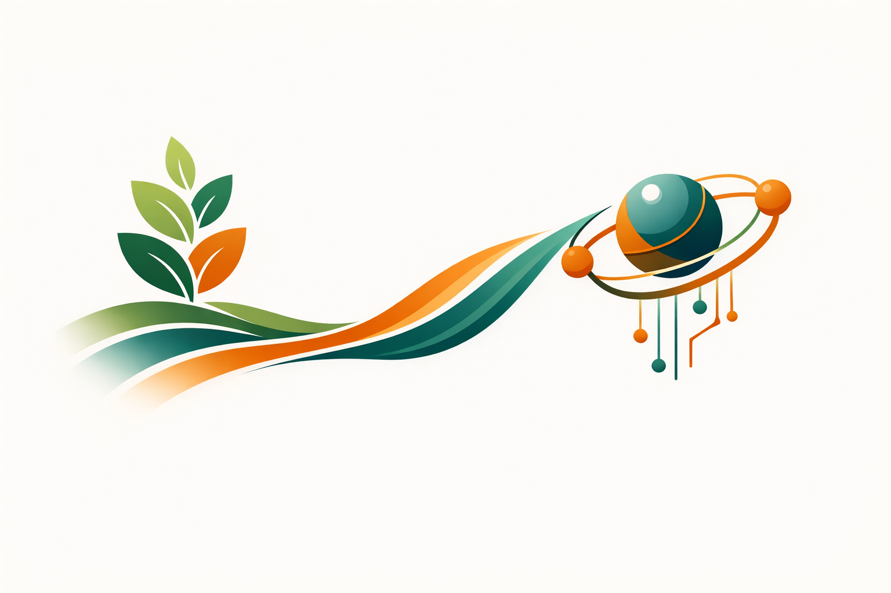

Understanding how biodiversity emerges, persists, and erodes across spatial and temporal scales is fundamental to predicting ecological responses to global change. Recent advances in computational modelling and paleoenvironmental reconstruction have opened new avenues to explore these processes in silico, providing powerful tools for linking ecological, evolutionary, and geological theories and data with long-term societal implications.
This block seminar focuses on mechanistic eco-evolutionary models using the gen3sis simulation engine, offering insights into biodiversity dynamics by critically formalizing and testing hypotheses and theories from multiple natural science disciplines. Mechanistic models are not just tools to fill knowledge gaps; they are also instruments to make epistemological uncertainty explicit (i.e., by testing what assumptions must hold for a given outcome to emerge), enhancing intuition about interacting processes acting across deep and shallow time.
Participants engage in critical reflection on the implications and limitations of current theoretical knowledge, computational models, and potential human influences on ecological and evolutionary processes.
Objectives
This course is designed to provide the basics on how to use gen3sis for various research questions, which is crucial for defining models within the modeling cycle. The course will briefly introduce the philosophical context of natural science and the principles of mechanistic models. Participants will engage in hands-on exercises, applying gen3sis to explore hypotheses concerning the genesis and maintenance of biodiversity within the R programming environment. Practical experiences will equip attendees with the necessary background to craft their own biodiversity models. The course mainly uses simulated data, aiming to aid participants gain insights into the interplay between processes and patterns in biodiversity research.
Learning outcomes
Participants will:
- Gain foundational, historical, and critical understanding of mechanistic eco-evolutionary modelling.
- Acquire hands-on skills to develop landscapes and eco-evolutionary rules/models within the
gen3sisframework. - Learn to design, execute, and interpret computational experiments to test hypotheses related to biodiversity emergence, maintenance, and erosion.
- Critically evaluate the strengths and limitations of computational models.
- Foster interdisciplinary thinking to formalize ecological and evolutionary theories and integrate them with other disciplines and real-world questions.
Recommended literature for preparation
- Hagen, O. (2023). Coupling eco-evolutionary mechanisms with deep-time environmental dynamics to understand biodiversity patterns. Ecography.
- Hagen, O., Flueck, B., Fopp, F., Cabral, J. S., Hartig, F., Pontarp, M., Rangel, T. F., & Pellissier, L. (2021). gen3sis: A general engine for eco-evolutionary simulations of the processes that shape Earth’s biodiversity. PLOS Biology.
Day overview and links
Day 1: Context, Setup
- Setup and the Basics: Core setup, first simulation workflow, and troubleshooting foundations.
- Repeat for real: Practical with a more realistic South America paleo-landscape and discussion of temporal resolution.
Day 2: Practical(s)
- 🏝️ Practical Island Hopping: Ground-up implementation of a full simulation workflow on an island system.
- 🌋 Practical Creating Worlds: Landscape-focused practical with environment construction and resolution-aware design choices.
- 🖥️ Practical Emergent Silicodiversity: Output exploration, summary interpretation, and custom diagnostics for biodiversity patterns.
Day3: Group Project
- 🎲 Unified Neutral Theory of Biodiversity and Biogeography: Integrated practical for custom hypothesis testing and model adaptation.
Extras
- Important considerations: Caveats, assumptions, and data constraints for critical interpretation.
- Further Resources: Additional package docs, vignettes, prior workshops, and key reading links.
Academic achievement
Active participation and independent thinking are expected. Evaluation is split into three equal parts reflecting the day structure:

- Discussions and critical engagement (1/3): This is your intellectual presence. It is about asking questions out loud, challenging ideas (constructively), and being curious about the material.
- Completion of practical assignments (1/3): This is you actually doing the exercises, running models, tweaking parameters, debugging when things break (they will).
- Flash presentations of findings (1/3): This is you presenting what you and/or your group discovered from your computational experiments and learning journey. These are your results: what worked, what did not, and what you learned from it.